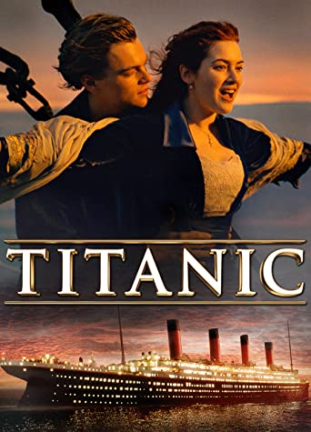

Titanic

About
Titanic is a 1997 American epic romance and disaster film directed, written, produced, and co-edited by James Cameron. Incorporating both historical and fictionalized aspects, it is based on accounts of the sinking of the RMS Titanic, and stars Leonardo DiCaprio and Kate Winslet as members of different social classes who fall in love aboard the ship during its ill-fated maiden voyage. Also starring are Billy Zane, Kathy Bates, Frances Fisher, Gloria Stuart, Bernard Hill, Jonathan Hyde, Victor Garber, and Bill Paxton.
Release date: January 8, 1998 (Germany)
Director: James Cameron
Box office: 2.202 billion USD
Budget: 200 million USD
Featured song: My Heart Will Go On
Homepage Movie List